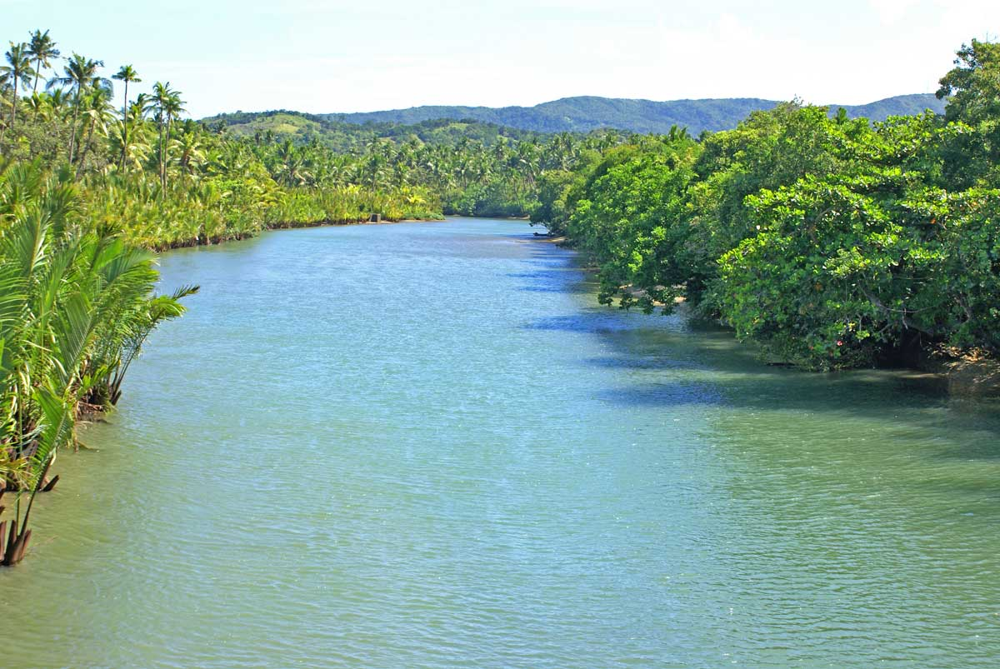
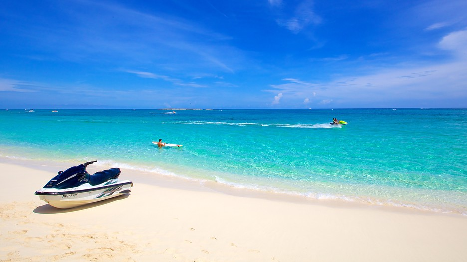

Major benefits of good and proper water management and sanitation
- • increased life expectancy with reduced morbidity and child mortality.
- • savings in health care costs.
- • reduced sick leave and higher worker productivity.
- • better learning capacities among schoolchildren - increased school attendance, especially by girls.
- • national pride and strengthened tourism.


- • reduced water treatment costs.